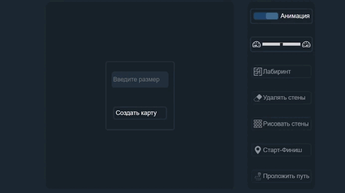
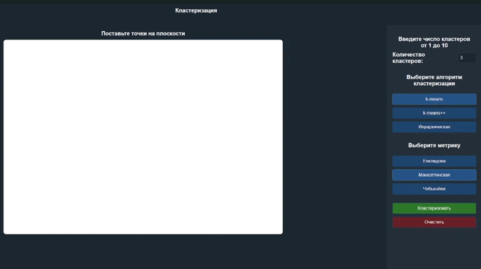
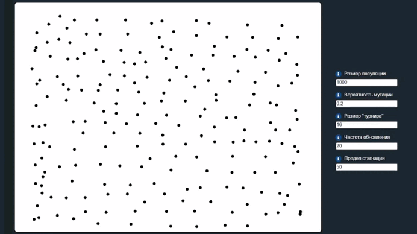
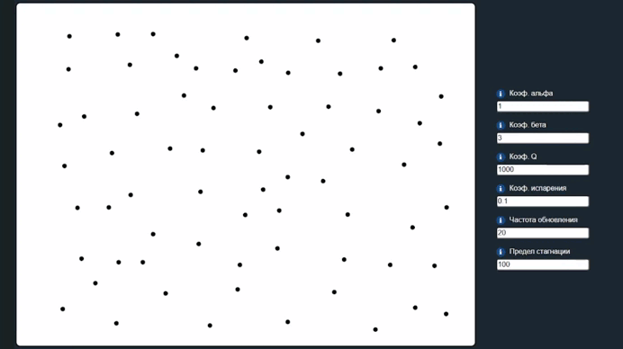

A*
Алгоритм поиска кратчайшего пути в лабиринте. Постройте его сами или попросите компьютер сгенерировать его за вас. A* использует эвристику для оптимизации поиска, сочетая жадный подход с учетом уже пройденного пути.
Кластеризация
Метод машинного обучения для группировки точек данных в кластеры. Расставьте произвольные точки на плоскости и посмотрите различнве методы кластеризации, имея возможность наглядно сравнить их.


Генетический алгоритм
Эволюционный метод для решения задачи коммивояжёра. Расставьте веришны графа, подберите коэфициенты на своё усмотрение, запустите алгоритм и наблюдайте за процессом поиска наикратчайшего пути.
Муравьиный алгоритм
Алгоритм, вдохновленный поведением муравьёв, оставляющих феромонные следы. Применяется для решения задачи коммивояжёра. Поставьте на плоскости точки в произвольном порядке и "муравьи" найдут кратчайший путь между ними.
